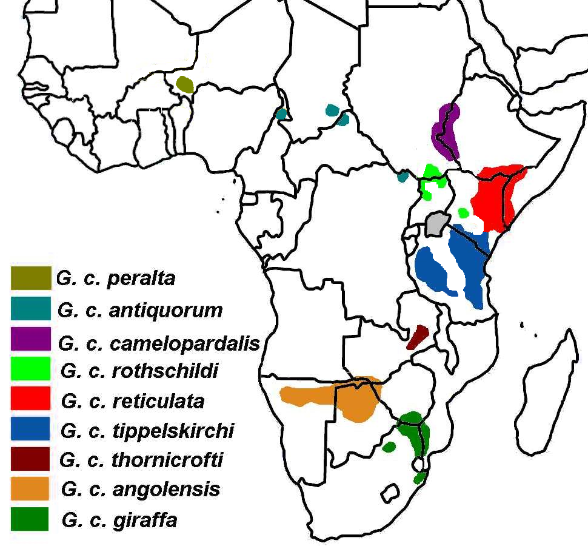

Распространение
Жирафы обитают в саваннах Африки. Сегодня их можно встретить только к югу и юго-востоку от Сахары, прежде всего в саваннах Восточной и Южной Африки. Популяции севернее Сахары были искоренены человеком ещё в древности: во времена Древнего Египта они существовали в дельте Нила и на берегах Средиземного моря. В XX веке ареал жирафов вновь значительно сократился. Наиболее крупные популяции жирафов сегодня обитают в заповедниках и резерватах.